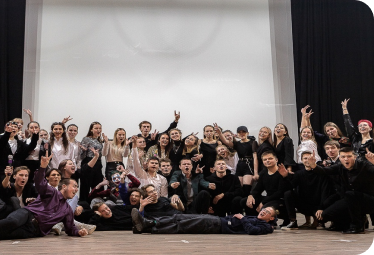

Мероприятия
-
Последняя неделя августа
Ролевая игра «Первокурсник»
У будущих студентов колледжа ПензГТУ есть уникальная возможность почувствовать себя первокурсником до начала учёбы. Участники мероприятия начинают свой день со знакомства со своим тьютором, группой и куратором(при наличии). Знакомство происходит благодаря командному тренингу. После чего, тьюторы начинают знакомить свою группу с колледжем. Рассказывает о том где находятся аудитории, деканат, буфет и тд. Так же есть "станции", на которых участники мероприятия могут узнать обо всём, что ожидает их в моменте обучения. (Как пользовать образовательным порталом, что такое стипендия и как её получать, что такое профсоюз и для чего он нужен и тд). После прохождения "станций" куратор забирает свою группу.
-
Первая неделя сентября
Конкурс «Место под солнцем»
Участники Конкурса, студенческие академические группы первого курса, готовят видеоматериал с выполнением творческого задания (танец, флэшмоб, смартмоб, коллективное стихотворение с показами (изображениями) фрагментов, СТЭМ, речевка (коллективные синхронные «кричалки»), дефиле (перестроение под музыку, может быть шуточное), частушки, пародия на знаменитостей, песня и др.) у историко-культурных мест г. Пензы (площадь В.И.Ленина, Монумент «Росток», памятник В.О.Ключевскому, Мост Дружбы, сквер «Копилка Пословиц», сквер им. В.Г. Белинского; Пензенский областной драматический театр им. Луначарского, Соборная площадь, памятник «Первопоселенец», ЦПКиО им. В.Г. Белинского, Тропа здоровья (ЦПКиО им. В.Г. Белинского), сквер им Л.Б. Ермина; ГАУК ПО Пензаконцерт (Филармония), Киноконцертный зал «Пенза», Светофорное дерево, сквер им. Ф.Э. Дзержинского, сквер мемориала Воинам-афганцам, здание бывшего кинотеатра «Родина» и представляют видеоматериал флешмоба в ЦМТ «Лидер» в ауд.1-238.
Приказ о проведении конкурса -
Первая неделя сентября
Верёвочный курс
Веревочный курс – это активный тренинг, длительностью от нескольких часов до нескольких дней, направленный на улучшение навыков командного взаимодействия, командообразования.
Правила веревочного курса
Веревочный курс проводится практически в самом начале смены школы студенческого актива, почти сразу же после командного тренинга, когда участники уже познакомились друг с другом, но при этом еще не успели стать единой командой.
Обычно в ВК сложность поставленной задачи превышает физические возможности участников, то есть человеку в одиночестве практически невозможно пройти задание самостоятельно. Таким образом, акцент постепенно смещается с механического выполнения физических упражнений на активизацию общения, выработку плана, взаимную поддержку внутри группы участников. -
Первая неделя сентября
Вертушка
Каждому студенту интересно что же есть в учебном заведении, помимо учёбы. Благодаря "вертушке" каждый может послушать о каждом объединении и задать интересующие их вопросы. Продолжительность каждой станции - 10 минут. Водящий группы - тьютор. У тьютора есть план маршрута (Время - аудитория), он должен контролировать весь процесс, приходить и уходить без задержек.
-
?
Презентация ЦМТ «Лидер»
Тьютор приводит свою группу на презентацию ЦМТ. Стоят столы и на каждом столе указано какое это направление. Каждый студент может подойти к каждому объединению и задать все интересующие вопросы и записаться. Ответственные за столы создают таблицу с данными участников и создают базу студентов, после чего начинают с ними работать.
-
Первые две недели октября
Упражнение «Джефферсона»
Инструкция: ведущий произносит некие спорные утверждения и предлагает каждому из участников высказать свое отношение к ним. Если участник согласен с утверждением, которое произносит ведущий, то участник встает под табличку "ДА", если не согласен - под табличку "НЕТ", ближе ответ "МОЖЕТ БЫТЬ", то - под среднюю табличку.
Правила упражнения «Джефферсона»
После того, как все определились с ответом, каждый может высказать свое мнение, объяснить свою позицию. -
Конец октября
ОТК
Откроем таланты каждого. Это прекрасная возможность для первокурсников показать свои таланты. Концерт состоит из сценария и номеров (сцена 1 - номер 1; сцена 2 - номер 2 ...). Оценивает фокус группа. Фокус группа состоит из каждого представителя по направлениям хореография, вокал, поэзия, режиссура). После чего фокус группа ставит баллы и распределяет номинации
 -
Последние выходные ноября
ШСА «Олимп»
Цель Школы студенческого актива «Олимп»:развитие личности конкурентоспособного специалиста путем вовлечения в творческую и общественно-политическую деятельность;формирование у обучающихся умений и навыков, необходимых для эффективной организации студенческого самоуправления.Это мероприятие направлено на студентов первого курса университета и колледжа.Школа проводится ежегодно. Организаторами мероприятия являются студенты старших курсов, которые обучались в Школе кураторов.Школа обычно проходит 3 дня в университете. Участники делятся на команды, проходят командный тренинг, верёвочный курс. Обучаются, благодаря тренингам и мастер-классам от студентов. Так же неформальное образование - неотъемлемая часть школы. Школа направлена на развитие личностных, творческих навыков. Благодаря нетворкингу студенты находят "полезные знакомства". В конце дня проходит вечернее мероприятие, для эмоционального выплеска, это самое яркое мероприятие за весь день.
-
Начало февраля
Школа студенческого актива в КТ
Школа студенческого актива в КТ. Это прекрасная возможность студентам колледжа проявить себя и сделать свою школу студенческого актива. Один день на базе университета. Студенты колледжа проходят этапы формирования команды. Помимо командообразования их ожидает развитие личностных качеств, творческих качеств. Два месяца тренингов. Высококвалифицированные специалисты по запросу студентов проводят тренинги.
1 этап - собрать запрос, с помощью анкет.
2 этап - продумать программу, в какой день и какой тренинг.
3 этап -за неделю до тренинга, с помощью гугл формы , собрать базу участников обучения.
4 этап - сертификаты об участии. -
Апрель
Студенческая весна
Цели и задачи: создание условий для творческого самовыражения обучающихся, воспитание художественного и эстетического вкуса обучающихся, создание необходимых условий для совершенствования системы эстетического воспитания и организации культурного досуга обучающихся.
Описание студенческой весны
В смотре-конкурсе принимают участие обучающиеся, преподаватели и сотрудники ПГТА.
Участие приглашенных лиц допускается не более 50 % в составе танцевальных пар, ансамбля, хора и актерского состава. Приглашенные лица не могут быть солистами зачетных номеров (кроме парных номеров (дуэтов)).
В двух номерах концерта факультета вуза должны участвовать учащиеся средних образовательных учебных заведений города Пензы.
Приглашенные со стороны лица могут принимать участие не более чем в двух концертах структурных подразделений академии.
Студенты академии (не более 10 человек) при необходимости могут участвовать в концертах от 1 до 3х структурных подразделений академии.
Продолжительность концерта не менее 60 минут, 10 конкурсных номеров являются зачетными.
За 2 часа до начала концерта в оргкомитет подаются оценочные листы, программа и списки участников, заверенные руководителем структурного подразделения ПГТА.
Вокальные номера исполняются только живым голосом, допускается заранее записанные фонограммы без наложения голоса (подпевки).
Внутриакадемический конкурс состоит из двух этапов: первый – концертное выступление структурного подразделения; второй – обязательное выступление на заключительном гала-концерте исполнителей отобранных жюри и зрителями концертных номеров.